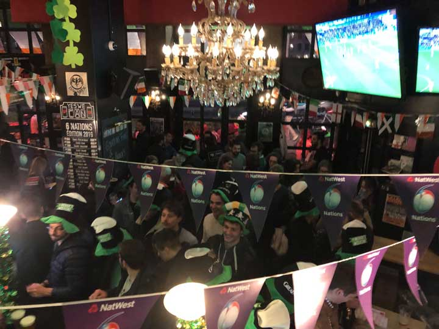
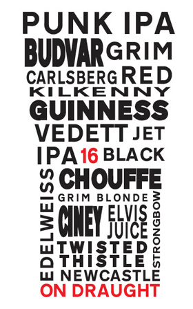
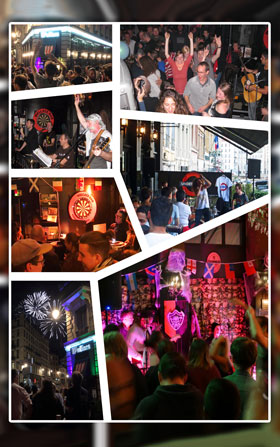

Pub, Vieux-Lyon
Your everyday pub
Fish & chips, burgers, bière de la brasserie maison et tous les grands sports en direct sur 4 écrans, au bord de la Saône.

La carte
Plat du jour le midi, du lundi au vendredi. Cuisine : lundi au samedi 12h-15h et 19h-22h, dimanche 11h-15h et 18h30-22h.
Cuisine
Boissons

Soirées et sport
Rugby, football, darts : tous les grands sports en direct sur 4 grands écrans.
-
Lundi, 20h30
Quiz
Le plus grand quiz de Lyon, avec des verres gratuits à gagner.
-
Direct
Sport sur 4 écrans
Tous les grands sports en direct.
-
Régulier
Concerts
Des concerts réguliers, dont la Fête de la Musique.
-
Club
Whisky Club
Le club whisky du Wallace.
-
Bière
Wallace Craft Beer
Un rendez-vous bière du bar.
-
Concours
Wallace on Tour
Un concours photo.

Dans la presse
En juillet 2019, une vidéo tournée au Wallace pendant le Mondial féminin a fait le tour du monde.
Vidéo du Mondial féminin 2019, relayée par
- Rolling Stone
- USA Today
- Fox News
- The Guardian
Aussi dans
- Le Progrès
- ExitMag
- Spot Web
- Découvrir Auvergne-Rhône-Alpes
- Brunch british
Infos pratiques
Horaires du bar
- Dimanche au jeudi11h à 00h30
- Vendredi et samedi11h à 02h30
Horaires de la cuisine
- Lundi au samedi12h-15h, 19h-22h
- Dimanche11h-15h, 18h30-22h
Adresse
Wallace Bar2 Rue Octavio Mey
69005 Lyon
Vieux-Lyon, bord de Saône.